BioAmp EXG Pill#
v1.0
Ringkasan#
BioAmp EXG Pill adalah papan akuisisi sinyal biopotensial analog-front-end (AFE) yang kecil dan kuat yang dapat dipasangkan dengan unit mikrokontroler (MCU) atau komputer papan tunggal (SBC) dengan konverter analog-ke-digital (ADC) seperti Arduino UNO & Nano, Adafruit QtPy, STM32 Blue Pill, BeagleBone Black, dan Raspberry Pi Pico, untuk beberapa nama saja. It juga bekerja dengan ADC khusus apa pun, seperti Texas Instruments ADS1115 dan ADS131M0x, di antara lainnya.
Note
Dianjurkan untuk menggunakan Arduino UNO R4 saat merekam sinyal biopotensial karena memiliki ADC 14-bit dan dapat merekam sinyal dengan lebih akurat.

Apa yang membuatnya berbeda?#
Rekam sinyal biopotensial berkualitas publikasi seperti ECG, EMG, EOG, atau EEG.
Ukuran kecil (25.4 x 10.0mm) memungkinkan integrasi mudah ke dalam proyek mobile dan terbatas ruang.
Penolakan kebisingan yang kuat membuatnya dapat digunakan bahkan saat perangkat dekat dengan pasokan AC mains.
Kabel apa pun dengan diameter 1.5 mm dapat digunakan sebagai kabel elektroda yang mengurangi tegangan, menjadikannya sangat hemat biaya.
Pasangkan dengan MCU apa pun dengan ADC. Itu secara default kompatibel dengan 5V tetapi Anda dapat membuatnya kompatibel dengan 3.3V juga menggunakan pembagi tegangan.
Konfigurasikan gain, filter band pass dan jumlah elektroda sesuai kebutuhan Anda.
Fitur & Spesifikasi#
Tata letak papan#
Desain elegan BioAmp EXG Pill memungkinkannya digunakan dalam 3 cara:
Lubang pin-header memungkinkan Anda menyolder header pin (berg strip) untuk penggunaan mudah dengan breadboard.
Lubang castellated memungkinkan Anda menyolder BioAmp EXG Pill langsung ke PCB kustom yang memerlukan kemampuan amplifikasi biopotensial.
Lubang elektroda memungkinkan Anda menggunakan kabel apa pun dengan diameter 1.5 mm sebagai kabel elektroda dengan tegangan minimal.
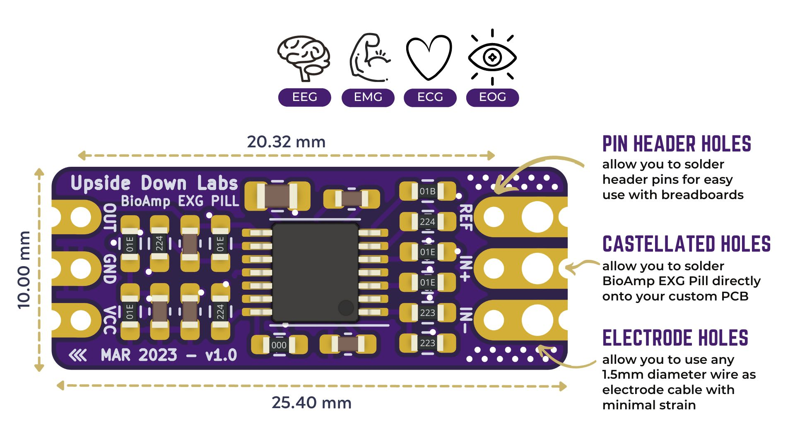
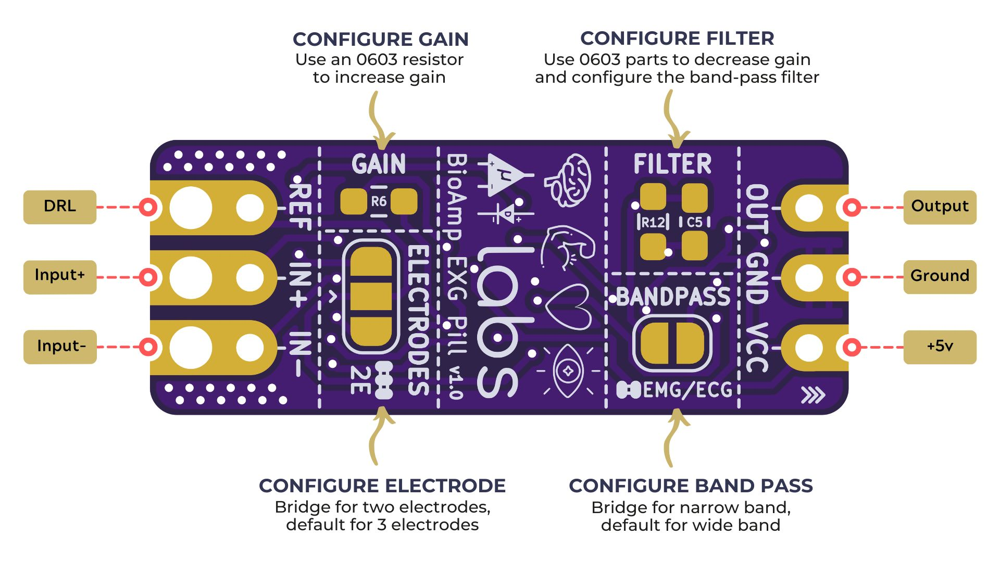
BioAmp EXG Pill sepenuhnya dapat dikonfigurasi#
Tingkatkan gain amplifier instrumentasi dengan menggunakan resistor 0603 di
R6. Kurangi gain dan konfigurasikan filter bandpass dengan menggunakan bagian 0603 diR12danC5. Pembatasan band sangat berguna untuk perekaman EOG dan EEG. Juga, sinyal terkadang klip saat merekam ECG dengan elektroda sangat dekat dengan jantung. Membuat jumper solder untuk filter band-pass membantu dengan itu. Secara default, BioAmp EXG Pill dikonfigurasi untuk merekam EEG dan EOG tetapi Anda dapat menjembatani pad (di bawah bandpass) dengan solder untuk membuatnya dapat dikonfigurasi untuk EMG dan ECG.Metode operasi normal untuk amplifikasi sinyal berkualitas terbaik adalah menggunakan 3 elektroda secara default tetapi Anda dapat menjembatani pad (di bawah elektroda) untuk membuatnya dapat dikonfigurasi untuk 2 elektroda. Mode 2-elektroda secara khusus disertakan untuk proyek seperti patch jantung (ECG) untuk HRV. Itu hanya dimaksudkan untuk digunakan dengan setup beroperasi baterai dan cukup rentan terhadap kebisingan interferensi tinggi karena kurangnya referensi yang tepat pada tubuh (Opsi ini tidak direkomendasikan untuk sebagian besar operasi)
Persyaratan perangkat lunak#
Sebelum Anda mulai menggunakan kit, silakan unduh Arduino IDE v1.8.19 (legacy IDE). Dengan menggunakan ini Anda akan dapat mengunggah sketsa arduino di papan pengembangan Anda dan memvisualisasikan data di laptop Anda.

Arduino IDE v1.8.19 (legacy IDE)#
Kunjungi Upside Down Labs Chords Web untuk memvisualisasikan sinyal bio-potensial Anda langsung di browser.

Halaman Peluncuran Chords Web#
Memulai dengan Chords Web
Tip
Untuk mengetahui lebih lanjut tentang Chords Web klik di sini.
Menggunakan Perangkat Keras#
Jika Anda telah menerima BioAmp EXG Pill yang dirakit maka Anda dapat melewati langkah 1 dan langsung ke langkah 2.
Langkah 1: Solder Konektor#
Masukkan konektor JST PH kabel BioAmp yang disediakan dan header pin dari atas seperti yang ditunjukkan di gambar dan solder dari bawah.
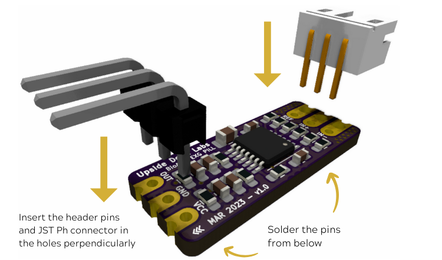
Menyolder konektor & header pin pada BioAmp EXG Pill#
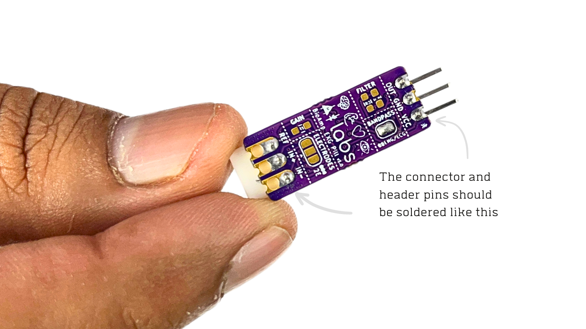
Setelah menyolder, BioAmp EXG Pill harus terlihat seperti ini#
Langkah 2 (opsional): Konfigurasikan untuk ECG/EMG#
BioAmp EXG Pill secara default dikonfigurasi untuk merekam EEG atau EOG tetapi jika Anda ingin merekam ECG atau EMG berkualitas baik, maka disarankan untuk mengkonfigurasinya dengan membuat sambungan solder seperti yang ditunjukkan di gambar.
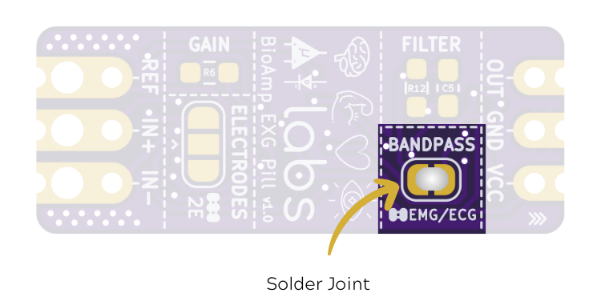
Note
Bahkan tanpa membuat sambungan solder BioAmp EXG Pill mampu merekam ECG atau EMG tetapi sinyal akan lebih akurat jika Anda mengkonfigurasinya.
Langkah 3: Hubungkan MCU/ADC#
Hubungkan BioAmp EXG Pill Anda ke MCU/ADC sesuai tabel koneksi yang ditunjukkan di bawah:
BioAmp |
MCU/ADC |
|---|---|
VCC |
5V |
GND |
GND |
OUT |
Input ADC |
Untuk semua contoh yang disediakan, kami menggunakan pin A0 Arduino UNO R3. Hubungkan BioAmp Anda ke MCU/ADC melalui kabel jumper yang disediakan di kit. Jika Anda menghubungkan pin OUT BioAmp ke pin analog lain (A0-A5) Arduino UNO board, maka Anda harus mengubah PIN INPUT di sketsa Arduino sesuai.

Koneksi dengan Arduino UNO R3#
Warning
Pastikan laptop Anda tidak terhubung ke charger dan duduk 5m jauh dari peralatan AC apa pun untuk akuisisi sinyal terbaik.
Langkah 4: Menghubungkan kabel elektroda#
Hubungkan kabel BioAmp ke BioAmp EXG Pill dengan memasukkan ujung kabel ke konektor JST PH seperti yang ditunjukkan di grafik di bawah.
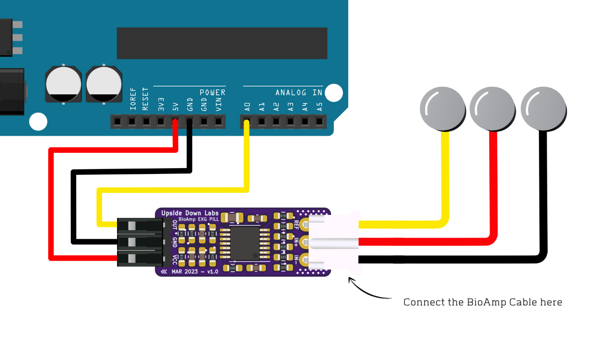
Koneksi dengan Kabel BioAmp v3#
Langkah 5: Persiapan Kulit#
Oleskan Gel Persiapan Kulit Nuprep pada permukaan kulit tempat elektroda akan ditempatkan untuk menghilangkan sel kulit mati dan membersihkan kulit dari kotoran. Setelah menggosok permukaan kulit secara menyeluruh, bersihkan dengan tisu alkohol atau tisu basah.
Untuk informasi lebih lanjut, silakan lihat langkah-langkah detail persiapan kulit.
Langkah 6: Mengukur Elektromiografi (EMG)#
Note
Elektromiografi (EMG) adalah teknik untuk mengevaluasi dan merekam aktivitas listrik yang dihasilkan oleh otot rangka. EMG juga digunakan sebagai prosedur diagnostik untuk menilai kesehatan otot dan sel saraf yang mengontrolnya (neuron motor). Hasil EMG mengungkap disfungsi saraf, disfungsi otot, atau masalah transmisi sinyal saraf-ke-otot.
Penempatan elektroda#
Kami memiliki 2 opsi untuk mengukur sinyal EMG, baik menggunakan elektroda gel atau menggunakan band BioAmp Otot berbasis elektroda kering. Anda dapat mencoba keduanya satu per satu.
Menggunakan elektroda gel:
Hubungkan kabel BioAmp ke elektroda gel,
Kupas backing plastik dari elektroda
Tempatkan kabel IN+ dan IN- di lengan dekat saraf ulnar & REF (referensi) di bagian belakang tangan Anda seperti yang ditunjukkan di diagram koneksi.
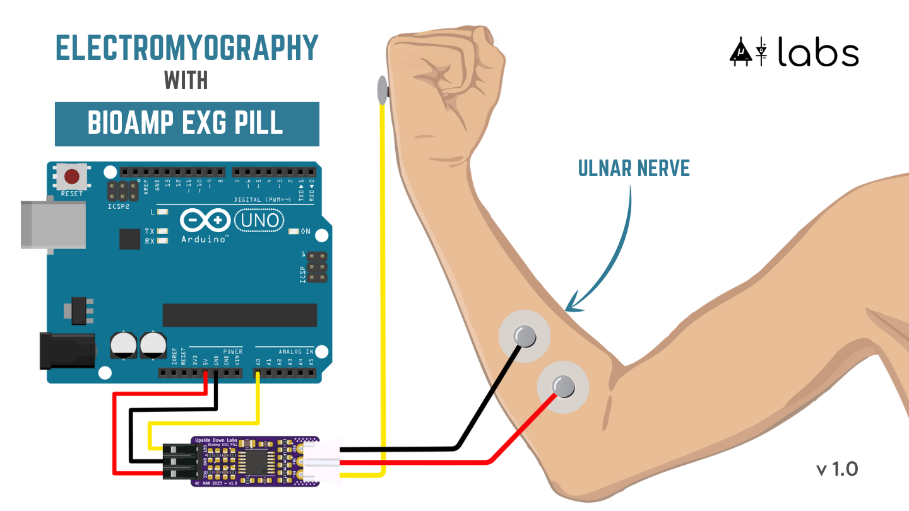
Menggunakan Band BioAmp Otot:
Hubungkan kabel BioAmp ke Band BioAmp Otot dengan cara sehingga IN+ dan IN- ditempatkan di lengan dekat saraf ulnar & REF (referensi) di sisi jauh band.
Sekarang letakkan tetesan kecil gel elektroda antara kulit dan bagian logam kabel BioAmp untuk mendapatkan hasil terbaik.
Tip
Kunjungi dokumentasi lengkap tentang cara merakit dan menggunakan Band BioAmp atau ikuti video youtube yang diberikan di bawah.
Tutorial tentang cara menggunakan band:
Note
Dalam demonstrasi ini kami merekam sinyal EMG dari saraf ulnar, tetapi Anda dapat merekam EMG dari area lain juga (bisep, trisep, kaki, rahang dll) sesuai kebutuhan proyek Anda. Pastikan untuk menempatkan elektroda IN+, IN- pada otot yang ditargetkan dan REF pada bagian tulang.
Mengunggah kode#
Hubungkan Arduino Uno ke laptop Anda menggunakan kabel USB (Type A to Type B). Salin tempel salah satu Sketsa Arduino yang diberikan di bawah di Arduino IDE v1.8.19 yang Anda unduh sebelumnya:
Pergi ke tools dari menu bar, pilih opsi board lalu pilih Arduino UNO. Di menu yang sama,
pilih port COM tempat Arduino Uno Anda terhubung. Untuk mengetahui port COM yang benar,
putuskan sambungan papan Anda dan buka kembali menu. Entri yang menghilang harus
port COM yang benar. Sekarang unggah kode, & buka serial plotter dari menu tools untuk memvisualisasikan
sinyal EMG.
Setelah membuka serial plotter pastikan untuk memilih baud rate ke 115200.
Tip
Kunjungi dokumentasi lengkap tentang cara mengunggah kode.
Important
Pastikan laptop Anda tidak terhubung ke charger dan duduk 5m jauh dari peralatan AC apa pun untuk akuisisi sinyal terbaik.
Memvisualisasikan sinyal EMG#
Untuk memvisualisasikan sinyal EMG, gunakan Chords Web untuk visualisasi sinyal bio-potensial real-time yang cepat dan tanpa masalah langsung dari browser Anda, tanpa menginstal perangkat lunak apa pun.

Memvisualisasikan sinyal EMG di Chords Web#
Sekarang tekuk lengan Anda untuk memvisualisasikan sinyal otot secara real-time di laptop Anda.
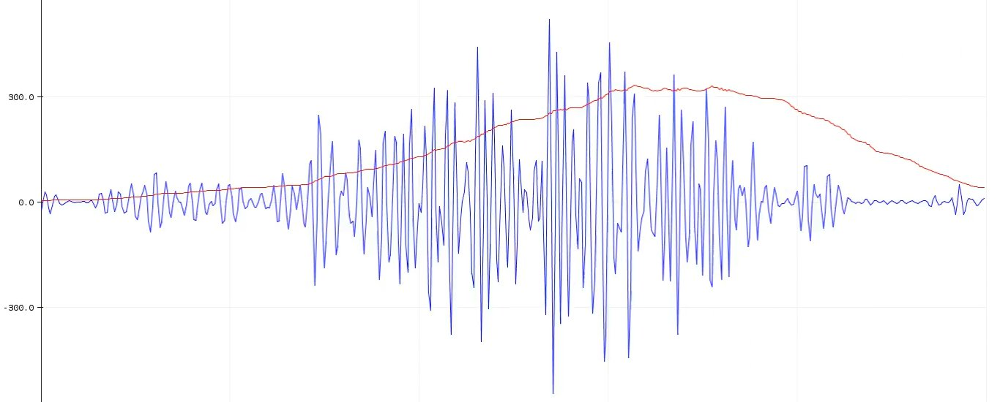
Memvisualisasikan sinyal EMG di Arduino IDE v1.8.x#
Langkah 6: Mengukur Elektrokardiografi (ECG)#
Note
Elektrokardiografi (ECG) adalah proses menghasilkan elektrokardiogram (ECG atau EKG). It adalah grafik tegangan versus waktu dari aktivitas listrik jantung menggunakan elektroda yang ditempatkan pada kulit. Elektroda ini mendeteksi perubahan listrik kecil yang merupakan konsekuensi depolarisasi otot jantung diikuti oleh repolarisasi selama setiap siklus jantung (detak jantung).
Penempatan elektroda#
Kami memiliki 2 opsi untuk mengukur sinyal ECG, baik menggunakan elektroda gel atau menggunakan band BioAmp Jantung berbasis elektroda kering. Anda dapat mencoba keduanya satu per satu.
Menggunakan elektroda gel:
Hubungkan kabel BioAmp ke elektroda gel
Kupas backing plastik dari elektroda
Tempatkan kabel IN- di sisi kiri, IN+ di tengah dan REF (referensi) di sisi kanan jauh seperti yang ditunjukkan di diagram.
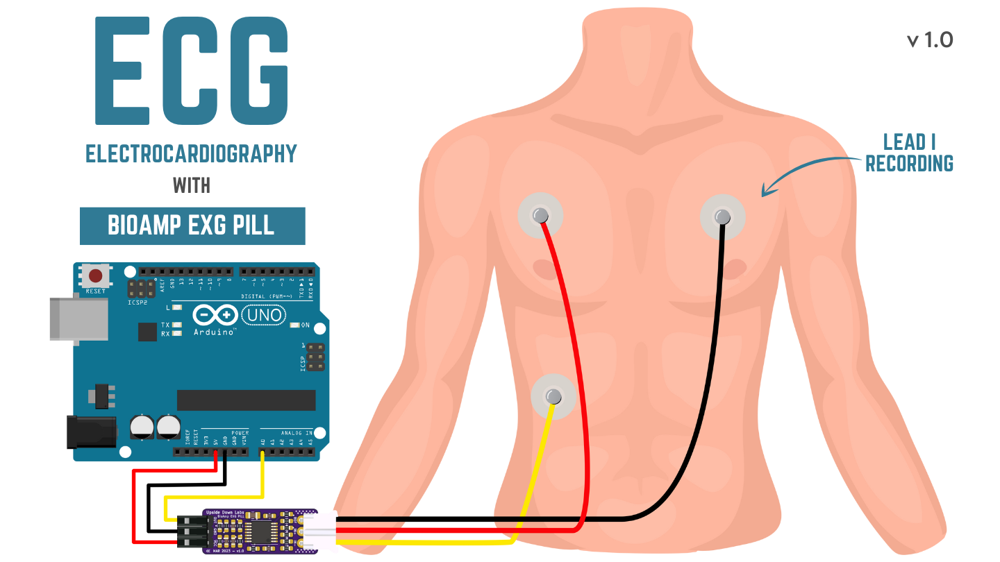
Menggunakan Band BioAmp Jantung:
Pakai band seperti yang ditunjukkan di video tutorial yang diberikan di bawah
Tempatkan kabel IN- di sisi kiri, IN+ di tengah dan REF (referensi) di sisi kanan jauh.
Sekarang letakkan tetesan kecil gel elektroda antara kulit dan bagian logam kabel BioAmp untuk mendapatkan hasil terbaik.
Tip
Kunjungi dokumentasi lengkap tentang cara merakit dan menggunakan Band BioAmp atau ikuti video youtube yang diberikan di bawah.
Tutorial tentang cara menggunakan band:
Mengunggah kode#
Hubungkan Arduino Uno ke laptop Anda menggunakan kabel USB (Type A to Type B). Salin tempel Sketsa Arduino yang diberikan di bawah di Arduino IDE v1.8.19 yang Anda unduh sebelumnya:
Pergi ke tools dari menu bar, pilih opsi board lalu pilih Arduino UNO. Di menu yang sama,
pilih port COM tempat Arduino Uno Anda terhubung. Untuk mengetahui port COM yang benar,
putuskan sambungan papan Anda dan buka kembali menu. Entri yang menghilang harus
port COM yang benar. Sekarang unggah kode, & buka serial plotter dari menu tools untuk memvisualisasikan
sinyal.
Setelah membuka serial plotter pastikan untuk memilih baud rate ke 115200.
Tip
Kunjungi dokumentasi lengkap tentang cara mengunggah kode.
Important
Pastikan laptop Anda tidak terhubung ke charger dan duduk 5m jauh dari peralatan AC apa pun untuk akuisisi sinyal terbaik.
Memvisualisasikan sinyal ECG#
Untuk memvisualisasikan sinyal ECG, gunakan Chords Web untuk visualisasi sinyal bio-potensial real-time yang cepat dan tanpa masalah langsung dari browser Anda, tanpa menginstal perangkat lunak apa pun.

Memvisualisasikan sinyal ECG di Chords Web#
Duduklah santai dan lihat sinyal ECG Anda secara real-time di laptop Anda.
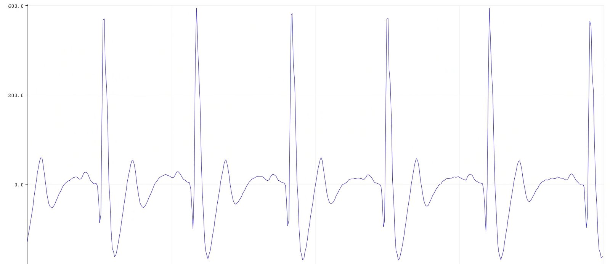
Memvisualisasikan sinyal ECG di Arduino IDE v1.8.x#
Langkah 7: Mengukur Elektrookulografi (EOG)#
Note
Elektrookulografi (EOG) adalah teknik untuk mengukur potensi korneo-retinal yang ada antara depan dan belakang mata manusia. Sinyal yang dihasilkan disebut EOG. Untuk mengukur gerakan mata, pasangan elektroda biasanya ditempatkan baik di atas dan di bawah mata atau ke kiri dan kanan mata. Jika mata bergerak dari posisi tengah menuju salah satu dari dua elektroda, elektroda itu “melihat” sisi positif retina, dan elektroda yang berlawanan “melihat” sisi negatif retina. Akibatnya, perbedaan potensi terjadi antara elektroda. Dengan asumsi potensi istirahat konstan, potensi yang direkam adalah ukuran posisi mata.
Penempatan elektroda#
Kami memiliki 2 cara untuk mengukur sinyal EOG, baik merekam gerakan mata horizontal atau gerakan mata vertikal. Anda dapat merekam kedua sinyal satu per satu.
Perekaman EOG horizontal:
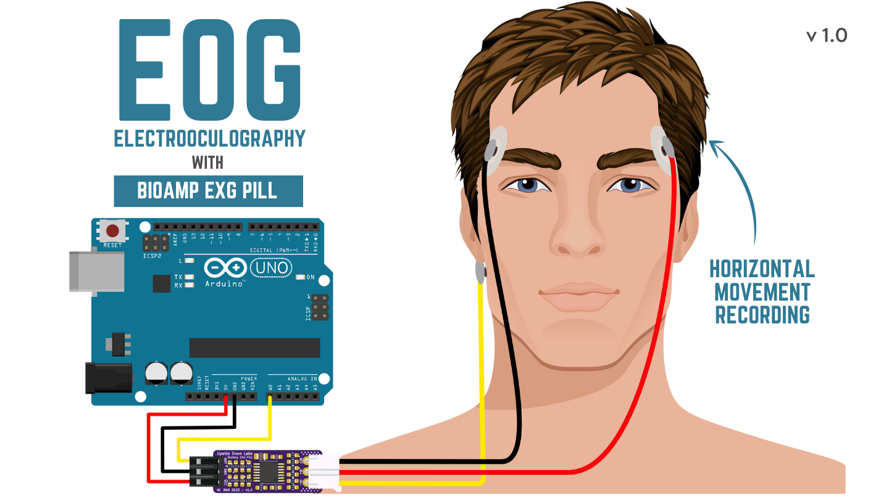
Hubungkan kabel BioAmp ke elektroda gel.
Kupas backing plastik dari elektroda.
Tempatkan kabel IN- di sisi kanan mata, IN+ di sisi kiri mata dan REF (referensi) di bagian tulang, di sisi belakang cuping telinga Anda seperti yang ditunjukkan di diagram di atas.
Perekaman EOG vertikal:
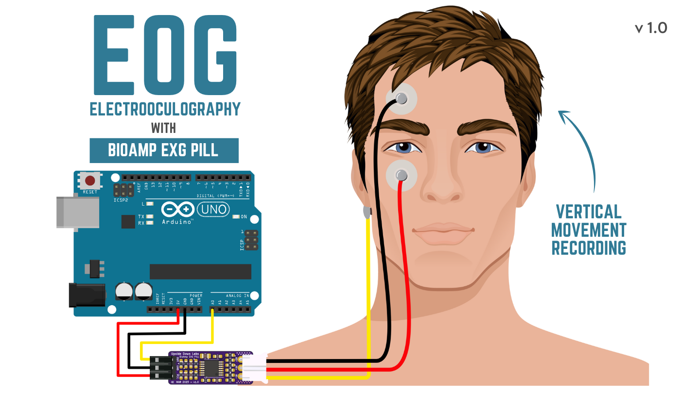
Hubungkan kabel BioAmp ke elektroda gel.
Kupas backing plastik dari elektroda.
Tempatkan kabel IN- & IN+ di atas dan di bawah mata masing-masing dan REF (referensi) di bagian tulang, di sisi belakang cuping telinga Anda seperti yang ditunjukkan di diagram di atas.
Mengunggah kode#
Hubungkan Arduino Uno ke laptop Anda menggunakan kabel USB (Type A to Type B). Salin tempel Sketsa Arduino yang diberikan di bawah di Arduino IDE v1.8.19 yang Anda unduh sebelumnya:
Pergi ke tools dari menu bar, pilih opsi board lalu pilih Arduino UNO. Di menu yang sama,
pilih port COM tempat Arduino Uno Anda terhubung. Untuk mengetahui port COM yang benar,
putuskan sambungan papan Anda dan buka kembali menu. Entri yang menghilang harus
port COM yang benar. Sekarang unggah kode, & buka serial plotter dari menu tools untuk memvisualisasikan
sinyal.
Setelah membuka serial plotter pastikan untuk memilih baud rate ke 115200.
Tip
Visit the complete documentation on how to How to upload the code.
Important
Pastikan laptop Anda tidak terhubung ke charger dan duduk 5m jauh dari peralatan AC apa pun untuk akuisisi sinyal terbaik.
Memvisualisasikan sinyal EOG#
Untuk memvisualisasikan sinyal EOG, gunakan Chords Web untuk visualisasi sinyal bio-potensial real-time yang cepat dan tanpa masalah langsung dari browser Anda, tanpa menginstal perangkat lunak apa pun.

Memvisualisasikan sinyal EOG di Chords Web#
Gerakkan mata Anda atas-bawah atau kiri-kanan untuk melihat sinyal EOG Anda secara real-time di laptop Anda.
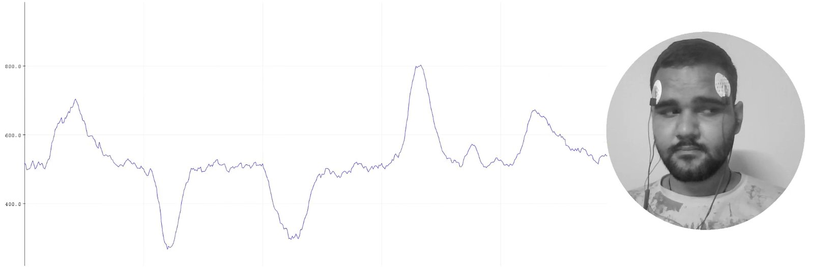
Memvisualisasikan sinyal EOG di Arduino IDE v1.8.x#
Langkah 8: Mengukur Elektroensefalografi (EEG)#
Note
Elektroensefalografi (EEG) adalah metode pemantauan elektrofisiologis untuk merekam aktivitas listrik pada kulit kepala. Selama prosedur, elektroda yang terdiri dari cakram logam kecil dengan kawat tipis ditempelkan ke kulit kepala Anda. Elektroda mendeteksi muatan listrik kecil yang dihasilkan oleh aktivitas sel otak Anda yang kemudian diperkuat untuk muncul di layar komputer. Itu biasanya non-invasif, dengan elektroda ditempatkan di sepanjang kulit kepala.
Untuk merekam EEG dari bagian otak yang berbeda, Anda harus menempatkan elektroda sesuai dengan sistem 10-20 internasional untuk merekam EEG.
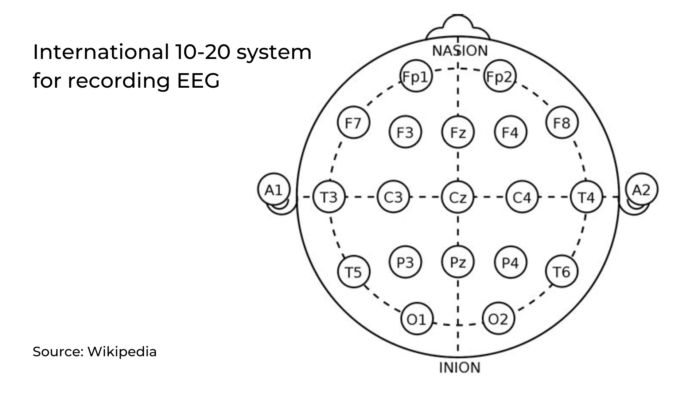
Penempatan elektroda#
Kami memiliki 2 opsi untuk mengukur sinyal EEG, baik menggunakan elektroda gel atau menggunakan band BioAmp Otak berbasis elektroda kering. Anda dapat mencoba keduanya satu per satu.
Menggunakan elektroda gel untuk merekam dari korteks prefrontal bagian otak:
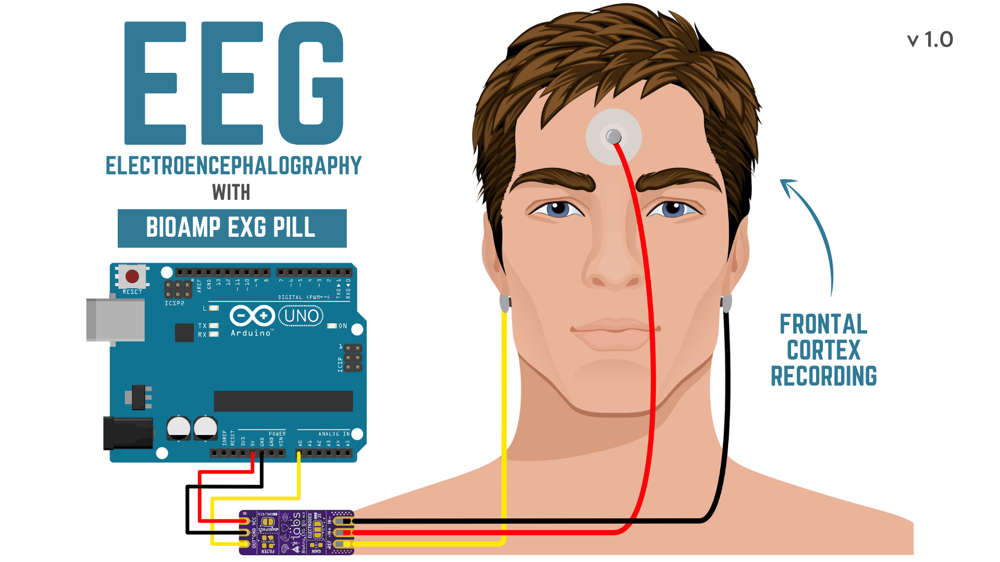
Hubungkan kabel BioAmp ke elektroda gel.
Kupas backing plastik dari elektroda.
Tempatkan kabel IN+ dan IN- pada Fp1 dan Fp2 sesuai sistem 10-20 internasional & REF (referensi) di bagian tulang, di sisi belakang cuping telinga Anda seperti yang ditunjukkan di atas.
Menggunakan Band BioAmp Otak untuk merekam dari korteks prefrontal bagian otak:
Hubungkan kabel BioAmp ke Band BioAmp Otak dengan cara sehingga IN+ dan IN- ditempatkan pada Fp1 dan Fp2 sesuai sistem 10-20 internasional.
Dalam hal ini, REF (referensi) harus dihubungkan menggunakan elektroda gel. Jadi hubungkan referensi kabel BioAmp ke elektroda gel, kupas backing plastik dan tempatkan di bagian tulang, di sisi belakang cuping telinga Anda.
Sekarang letakkan tetesan kecil gel elektroda pada elektroda kering (IN+ dan IN-) antara kulit dan bagian logam kabel BioAmp untuk mendapatkan hasil terbaik.
Tip
Kunjungi dokumentasi lengkap tentang cara merakit dan menggunakan Band BioAmp atau ikuti video youtube yang diberikan di bawah.
Tutorial tentang cara menggunakan band:
Note
Demikian pula Anda dapat menggunakan band untuk merekam sinyal EEG dari korteks visual bagian otak dengan menempatkan elektroda kering pada O1 dan O2 alih-alih Fp1 dan Fp2. Semuanya akan tetap sama.
Data EEG 2-saluran#
Untuk merekam data Elektroensefalografi (EEG) 2-saluran menggunakan dua BioAmp EXG Pill dalam hubungannya dengan Arduino Uno R4 Minima, setup perangkat keras yang cermat diperlukan.
Komponen yang Diperlukan
Dua BioAmp EXG Pill
Arduino Uno R4 minima
Breadboard
Kabel jumper
Elektroda gel
Setup perangkat keras
Untuk mengatur perangkat keras untuk perekaman EEG 2-saluran menggunakan dua modul BioAmp EXG Pill dan Arduino Uno R4 Minima, mulailah dengan menghubungkan pin 5V dan GND Arduino ke rel daya breadboard, lalu pasok VCC dan GND dari breadboard ke kedua BioAmp EXG Pills. Hubungkan pin OUT dari EXG pill pertama ke pin analog Arduino A0 (saluran 1) dan OUT dari EXG Pill kedua ke pin analog A1 (saluran 2). Untuk penempatan elektroda, hubungkan IN+ dari setiap modul (kabel merah) ke situs perekaman EEG yang berbeda di dahi (mis. Fp1 dan Fp2), dan hubungkan IN- (kabel hitam) dan kedua pin REF (kabel kuning) dari EXG Pills ke elektroda referensi umum yang ditempatkan di lokasi netral seperti mastoid atau cuping telinga untuk memastikan akuisisi sinyal yang bersih dan sinkron.
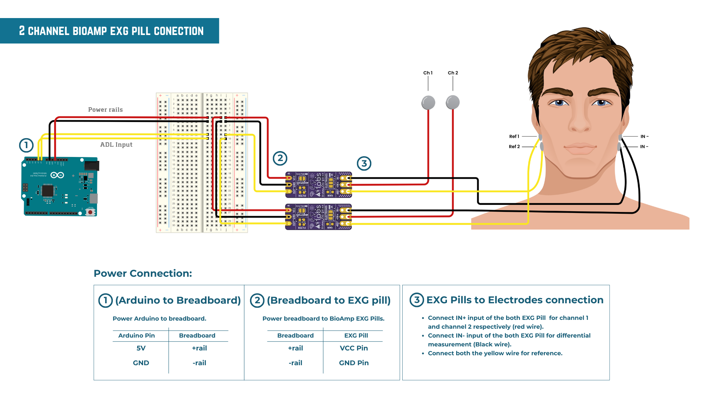
Mengunggah kode#
Hubungkan Arduino Uno ke laptop Anda menggunakan kabel USB (Type A to Type B). Salin tempel Sketsa Arduino yang diberikan di bawah di Arduino IDE v1.8.19 yang Anda unduh sebelumnya:
Pergi ke tools dari menu bar, pilih opsi board lalu pilih Arduino UNO. Di menu yang sama,
pilih port COM tempat papan pengembangan Anda terhubung. Untuk mengetahui port COM yang benar, layar
putuskan sambungan papan Anda dan buka kembali menu. Entri yang menghilang harus
port COM yang benar. Sekarang unggah kode.
Tip
Kunjungi dokumentasi lengkap tentang cara mengunggah kode.
Important
Pastikan laptop Anda tidak terhubung ke charger dan duduk 5m jauh dari peralatan AC apa pun untuk akuisisi sinyal terbaik.
Memvisualisasikan sinyal EEG#
Untuk memvisualisasikan sinyal EEG, gunakan Chords Web untuk visualisasi sinyal bio-potensial real-time yang cepat dan tanpa masalah langsung dari browser Anda, tanpa menginstal perangkat lunak apa pun.

Memvisualisasikan sinyal EEG di Chords Web#
Sinyal yang dapat Anda lihat di layar sekarang berasal dari korteks prefrontal bagian otak Anda dan menyebar melalui semua lapisan ke permukaan kulit Anda.
Anda telah menempatkan elektroda di dahi (Fp1 & Fp2), BioAmp EXG Pill memperkuat sinyal tersebut sehingga kita dapat mendeteksinya dan akhirnya mengirimkannya ke ADC (Konverter Analog ke Digital) Arduino Uno Anda dan sinyal divisualisasikan di Chords Web.
Tip
Untuk memastikan Anda merekam sinyal berkualitas tinggi, lihat panduan detail di sini: Memecahkan Masalah Kualitas Sinyal EEG.
Kami harap semuanya jelas sekarang dan Anda memahami bagaimana sinyal menyebar dari otak Anda ke layar laptop.
Glimpses dari versi sebelumnya#
BioAmp EXG Pill dapat digunakan dalam berbagai cara, video YouTube di bawah menunjukkan cara potensial menggunakan v0.7 dari
BioAmp EXG Pill.
Banyak yang meningkat dalam hal penolakan interferensi dan fleksibilitas dari v0.7 ke v1.0 dari BioAmp EXG Pill. Video YouTube
di bawah menunjukkan perekaman ECG, EMG, EOG, dan EEG menggunakan v1.0b dari perangkat.
Aplikasi Dunia Nyata#
BioAmp EXG Pill sempurna untuk peneliti, pembuat, dan hobi yang mencari cara baru untuk sampling data biopotensial. It dapat digunakan untuk berbagai proyek biosensing menarik, termasuk:
Deteksi congestive heart failure menggunakan CNN (ECG)
Perhitungan variabilitas detak jantung untuk mendeteksi penyakit jantung (ECG)
Kontrol lengan prostetik (servo) (EMG)
Kontrol lengan robotik 3DOF (EMG)
Kontroler permainan real-time (EOG)
Deteksi kedipan mata (EOG)
Mengambil foto dengan kedipan mata (EOG) dan banyak contoh lainnya.
Ide proyek & tutorial#
Di bawah ini adalah beberapa proyek yang dibuat oleh siswa menggunakan BioAmp EXG Pill.
Ini adalah beberapa ide proyek tetapi kemungkinannya tak terbatas. Jadi buat proyek Human Computer Interface (HCI) dan Brain Computer Interface (BCI) Anda sendiri dan bagikan dengan kami di contact@upsidedownlabs.tech.